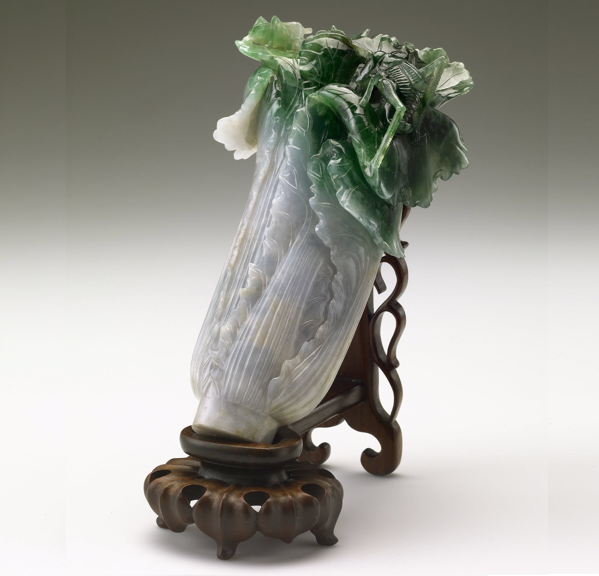

故宮精選館藏
翠玉白菜 (19世紀．翠玉雕刻)
(翠玉白菜)是故宮博物院珍藏的玉器雕刻，長18.7公分，寬9.1公分，厚5.07公分， 與「毛公鼎」、「肉形石」並列合稱「故宮三寶」。事實上， 故宮博物院珍藏了三顆翠玉白菜，但以此圖片中的最為人熟知。

肉形石 (17世紀．瑪瑙製成)
《肉形石》是故宮博物院珍藏的國寶之一，原是清朝的宮廷珍玩， 工匠將一塊自然生成的瑪瑙表而染色，製作成層次分明，毛孔肌理逼真的藝品， 高6.6公分，長7.9公分，遠遠望去外觀就像一塊東坡肉，因而稱為肉形石。
毛公鼎 (西元前771年．青銅製成)
《毛公鼎》是西周宣王年間鑄造的青銅鼎，深27.2公分， 口徑47公分，重34.7公斤，腹內鑄銘32行500字，不僅是舉世最長的銘文， 其書法也是金文中最高等級。傳於清道光年間在陝西出土，經多次轉手秘藏， 後隨故宮文物渡海來台。

汝窯青瓷洗 (12世紀·陶瓷燒窯)
《汝窯青瓷洗》產自北宋知名的窯口-汝窯，高3.5公分 深2.5公分，徑12.9公分，足徑9公分，汝窯位於河南清涼寺，由於其所燒製的瓷器釉色特殊， 藍中透著綠，微微閃現淡粉的光澤，器形端整大方，深受皇家與鑑賞家的喜愛。